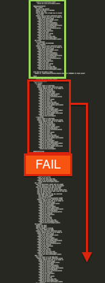

class: bottom, right, remark-slide-fullscreen, columned background-image: url(images/Lando_Calrissian.jpg) background-size: cover; # How to Fight Randos ## Eliminating Inconsistent Test Failures ## Austin Putman, @austinfrmboston<br>VP of Engineering, Omada Health ??? Hello folks Since you're sitting here at 4pm on a Thursday, I assume you don't know where the bar is. As a public service announcement, there is a bar on the first floor of this hotel, I expect that's where the main track is taking place. Alternate tracks are happening in the bars 100 feet in any direction from the hotel entrance. I'm Austin Putman, VP of Engineering for Omada Health. At Omada, we support people at risk of chronic diseases like diabetes make crucial behavior changes and have longer, healthier lives. --- # Cucumber / Capybara - Database transactions - Threading - Race conditions ??? I'll start with spoilers, because I want you to have an amazing Railsconf. This is a keyword cheat sheet of what I'm going to cover. If it's not what you were looking for don't be shy about exiting. We're going to spend some quality time with Capybara and Cucumber whose flakiness is legendary, for very good reasons Can I see hands, how many folks have problems with non-repeatable failures in their integration test suite? So, people with hands up right now, on your project someone might say, "the test failed, but it was just in the Cucumber suite." --- # Rspec - Test pollution - Random seeds - Binary search ??? In Phase 3, we'll cover the ways that Rspec refuses to help us track down test pollution. How many folks have had random failure problems in the model or controller test suite? And for these folks, someone might say, "The tests failed, but I ran it again and it passed" --- # Random sources - Faker Data - Times and Dates are crappy - External services ??? Well, here are some of the answers you'll get from me, folks. Random data, timezone heck, and external dependencies can all lead to pain. How many people here have had a test fail due to daylight savings time issues? Ben Franklin, you are a menace. --- # Random Failures # aka "Randos" ??? This talk is about eliminating inconsistent failures in your tests, or as we call it on our team, "Fighting Randos". I'm here, giving this talk, because I was stupid and shortsighted. Random failures caused me enough pain that it seemed worth talking about. It was my responsibility to keep an eye on technical debt, and I let the ball drop. I chose to try to hit deadlines instead of focusing on build quality, and our team paid a terrible price. Anybody out there feel me on this one? The first version of this talk was internal, to help our whole team understand how to eliminate random failures when they find them. -- # Science! ??? Some projects seem to have more random failure problems than others. With such a large, distinguished audience, I'd like to gather some data. - If you write tests on a regular basis, Raise your hand - Keep your hand up if you believe you have experienced an inconsistent test failure - Now, Keep your hand up if you think you're likely to experience one again within the next month - Now, Keep your hand up if you are seeing these failures outside of your Cucumber or Capybara suite. - This is research, that looked to me like x% Either: So, for many of you this is purely hypothetical. Maybe you don't really write that many tests. Maybe you've been fortunate in your projects or your codes are perfect. Or: So, this is a widespread problem. But I haven't seen a lot of people talking about it. The truth is, while being a wonderful tool, a comprehensive integration suite is a breeding ground for baffling heisenbugs. Then: Some projects this happens a lot and others not so much. I have some superstitions about some "test code smells" that I think lead to random test failures, which I'll share with you soon. But for the folks in the room who haven't lived through this, let's review why we care about this. --- class: middle # I. Is That Bad? ??? To understand how test failures can become a chronic productivity blocker, it's necessary to talk a bit about our testing culture. --- class: middle # Continuous Integration ??? We have an automated CI machine that runs our full test suite every time a commit is pushed. --- # Moar Science! - Jenkins - CI Joe - Travis ??? Raise your hand if you work on a project with a setup like that? Keep your hand up if you're set up to push automatically to a staging or acceptance environment when the test suite passes? Now, keep your hand up if you have it set up to push automatically to your production environment when the test suite passes? My God you are brave. --- # The long version - cucumber and cucumber-rerun ??? In the fall of 2012, we started seeing occasional unreproduceable failures of the test suite in Jenkins. We were pushing to get features out the door for a Jan 1st launch date, and we found that we could just re-run the build and the failure would go away. We got pretty good at spotting the 2 or 3 tests where this happened. So we would check the output of a failed build, and if it was one of the suspect tests, we'd just run the build again, it would pass, staging would deploy, we'd continue marching toward launch. By the time spring rolled around, there were 7 or 8 places that caused problems regularly. Eventually I reviewed the code for these tests and made some tweaks that I hoped would fix it. Since the failures were unreproduceable, it was hard to say if the problem had been fully resolved. We added a gem called cucumber-rerun, that would re-run the failed specs if there was a problem, and if they passed the second time, call it good. For a time, everything was peaceful. --- # Speed daemons - parallel_tests ??? We added new members to our team, and it was suggested that we could speed up the CI run with parallel_tests. Rerun and parallel weren't compatible, so we had a test suite that ran 3 times faster but failed twice as often. It only failed about 10% of the time, and with parallel it could run in 10 minutes, so we would just run it again when it failed. After all, it was still faster than running the build without parallel_tests. --- # Bad Jenkins ??? As we came into the fall, we had our first "bad Jenkins" week. Starting on a Tuesday, the build just stopped passing. There were anywhere from thirty to seventy failures. Some were regular offenders, but dozens of them were from previously solid specs. None failed in isolation. Even when rspec managed to finish, cucumber would fail. The failures could not be reproduced on a dev machine or even on the CI machine when run outside the build. --- # Mysterious benefactor ??? Over the weekend, someone pushed a commit and we got a green build. We had tried a million things, but no single change obviously led to the passing build. The next week we were back to our usual 15% failure rate. We could push stories to staging again, we were still under deadline pressure, we shrugged and moved on. Maybe someone wants to guess what happened next? --- # Very bad Jenkins ??? Yeah, It happened again. We turned off parallel_tests because we couldn't even get a coherent reading from the log about which tests were causing the errors. We started commenting out particularly problematic tests. Still, there were a number of seemingly innocuous specs that would fail regularly but not consistently. Test that had enough business value to make us very reluctant to comment them out. We re-instated cucumber-rerun and its buddy, rspec-rerun, which mostly worked. --- # Everything is terrible ??? We were making progress, but the build issues continued to show up in the negative column in our retrospectives. There were several problems with the situation. --- # Reduced trust .center[] ??? # Reduced trust When build failures happen 4-5 times per day, they stop being a red flag. Everyone on the team knows that the most likely explanation is a random failure. The default response to a build failure becomes ... --- # Run it again ??? That's right, simply run the build again. What happens next? --- class: remark-slide-fullscreen background-image: url(images/consistent_failures.jpg) # Missing actual failures ??? Well, occasionally we break things for real. But we stopped noticing because we started expecting CI to be broken. Sometimes other pairs would pull the code and notice legitimate failures. Sometimes we thought we were having a "bad Jenkins" week, and on the 3rd or 4th day we would notice the actual failures. This was bad. --- # QA and Acceptance blocked - (aka feedback blocked) .center[] ??? Our system depends on green builds to mark code that can be deployed to staging and production. Without green builds, stories can't be delivered and reviewed. So we stopped getting timely feedback. Meanwhile, the reviewer gets a week's worth of stories delivered in a giant clump. That means they have less time attention to pay attention to detail on each delivered feature. And *that*, folks, means crappier products. --- # Can't #Shipit .center[] ??? Need a quick bugfix? Forget about it! You've got a 20% chance your bugfix build will fail for no reason. Code has to ship anyway because the app is mega-busted? In this case, we would re-run the failed tests on our local machines, then cross our fingers and ship. So, in effect, "Works on my machine" became our policy for deploying code to production. --- # TDDeath .center[] ??? At the most extreme, people lose faith in the build and eventually in the tests. This didn't happen to us, but I had to explain to management that key features couldn't be shipped because of problems with the test server. And they wanted to know a whole lot more about the test server. And it was clear that while a working test server had their full support, an unreliable test server was pretty clearly a business liability that would need to be resolved. The test server is supposed to solve problems. That is the only story I like to tell about it. --- # Randos ??? As we begin to fight back, we personified the random failures. They became randos, a rando-attack, a rando-storm, and most memorably --- <img src=images/IMG_0545.jpg align=right width=400> # Rando Backstabbian ??? And once we began to identify the huge costs we were paying on this technical debt, we knew that Rando had to die. --- class: middle # II. What Goes Wrong? ??? We had a pair working on the test suite full time for about three months. We tried about a thousand things, and some of them worked. I'm going to pass along the answers we found and the hypotheses we didn't disprove. Honestly I'm hoping that you came to this talk because you've had similar problems and you've found better solutions. What follows is a selection of ours. --- # II. What Goes Wrong? # Cucumber/Capybara/Poltergeist is flaky ??? I've talked to enough other teams that use these tools extensively to know that the results are simply not as deterministic as we'd like. Fundamentally, you're using multiple threads, and asserting against a browser environment. So "browser environment" is a euphemism for a complex piece of software that itself is a playground for network latency issues, rendering hiccups, and callbacks. So your tests need to be written in a very specific way to prevent the poor threads from getting confused and smashing into each other. If you happen to use the right style out of the gate, you may never notice any problems. --- # Capybara Style Cues --- # Checking that the page has loaded ```ruby visit user_path within('.user_profile') do page.should have_content(name) end ``` ??? New capybara is supposed to be better at this, and they've improved in many ways. I do not trust them. This is a good example of a lurking Rando due to a race condition in your browser. Capybara is supposed to wait for the page to load before continuing, but I find it has medium success. --- # Bolt it down ```ruby visit user_path # check yourself before you select yourself page.should have_css('.user_profile') within('.user_profile') do page.should have_content(name) end ``` ??? We used to have something called the wait_until block, which would stop execution until a condition was met. That was nifty, since it replaced the earlier practice of just sticking sleep statements into the code and hoping you got the timing right. But modern Capybara has done away with the externally available wait_until block. They still use it internally with the matchers have_css and have_content. So be sure to assert that something exists before you try to do anything with it. --- # Making DB objects ```ruby @sandwich = Sandwich.create(name: "hoagie") visit sandwiches_path page.should have_content('hoagie') ``` ??? Here's another regular offender -- creating database objects from within the test thread. So what's wrong with this approach? If you are using Mysql, maybe nothing at all. That's because Mysql has the transaction hygiene system equivalent to a roadside diner. If you are using Postgres, which we are, which has stricter rules about transactions, it can create a world of pain. --- # Threads and Database connections (helpful image here) ??? The test code and the Rails server are running in two different threads. The postgres driver by default runs your database connections as a pool. So when your tests run inside a transaction, you have two fail cases. --- # Failure 1 - Resource Contention ``` SAVEPOINT active_record_-1 PG::SyntaxError: ERROR: syntax error at or near "-" LINE 1: SAVEPOINT active_record_-1 ``` ??? In one case, both the test thread and the server thread have the same database connection, and thus are in the same transaction. This seems good, because the server will be able to see the uncommitted data within your test transaction. However, both the test thread and the server thread are issuing checkpoints and rollbacks against the same connection. Sometimes one thread will issue a rollback after the other thread has committed the last transaction. Result: Rando. --- # Failure 2 -- Invisible Objects ``` ActiveRecord::RecordNotFound ``` ??? Sometimes the thing you just created in your test isn't there when you look at the index page. Far as I can tell, that's because now your server thread is looking at a different transaction state than when you created the DB object. Since your whole test is running in a transaction, you never know when you'll suddenly be outside of it. --- # Case 3 -- It works ::green dot:: ??? With all these opportunities for things to go wrong with the database threading, how does it ever work? Why does it work so often? I'll be honest, I wish I knew. Really, though, I hope you know. Seriously, if you've got a solid handle on how this ever works, but why it fails sometimes, I'd love to hear it. Ideally, at the bar. --- # DB-backed object solutions ??? So you want to create some state in your application to run your test against, but you can't trust the test thread and the server thread to read the same database state. What do you do? --- # Don't take my word for it. http://www.spacevatican.org/2012/8/18/threading-the-rat/ Credit: @fglc2 and @dressipi ??? There's a few steps you'll want to explore to fully lock down your postgres database for Capybara. Luckily, someone did a terrific writeup of this. --- # Avoiding transaction data visibility issues - Use fixtures and fixture_builder ??? On our project we use a single set of fixture data, fixed at the beginning of the test run. We use Ryan Dy's excellent fixture_builder gem to bring combine the nice maintainable characteristics of factoried objects with the set it and forget it simplicity of fixtures. Any state that needs to exist across multiple tests is stored in a set of fixtures used throughout the test suite. Unfortunately our fixture builder definition file is 840 lines long, and as dense as a master's thesis. It takes about 2 minutes to rebuild the fixture set, which fortunately only happens a couple of times a day. --- # Avoiding transaction data visibility issues - Don't use transactions, use truncate ??? Slow, but devastatingly effective --- # Avoiding transaction data visibility issues - Make everything through the browser ??? This is the ideologically perfect solution and one I use frequently in very, very small example applications. The integration test suite shouldn't know anything about the database. It should work through the browser, just as the user does. A feature that doesn't have effects that are visible to the user doesn't belong in the integration suite. Unfortunately, creating your user account and manually populating your data before you run any expectation is agonizingly slow. --- # Mutex on the server and test threads ??? Show off capybara sync --- # Race conditions ??? Whenever you create a situation where a sequence of key events doesn't happen in a predetermined order, you've got a potential race condition. The winner of the race is random and thus can create random outcomes in your test suite. The browser is fantastic for this -- the `bolt it down` example I showed earlier tries to help you cope. Another great example is AJAX. your javascript running in Firefox may or may not complete its AJAX call and render the response before the test thread makes it assertions. Capybara tries to fix this by retrying assertions with a timeout, but it doesn't always work. Clicking a button to submit a form and then going to another page or refreshing the page might cut off the POST request, especially if it's an AJAX request. --- # AJAX ```ruby def wait_for_ajax_result wait_until(10) do page.evaluate_script('$.active') == 0 end end ``` Credit @mikegehard, @pivotallabs ??? You can fix this by adding an explicit wait into your cucumber steps when you need to rig the race. jQuery provides a handy counter of all the active XHR requests outstanding, so you don't have to break a sweat. --- # II. What Goes Wrong? # Sources of Randomness .center[] ??? Some of the randomness in our test suite was due to the inputs we gave it. Our code depends on fixtures and factories. The factories use randomly generated fake data to fill in names, zip codes, and text fields. There are good reasons to use random data here. It regularly exercises edge cases without engineers having to think of them. The code should work the same regardless of what zip code someone is in. But sometimes it doesn't. --- # Faked Out ``` Faker::Address.zip ``` ??? For example, did you know that Faker includes Guam and Puerto Rico in the states that it might generate for someone? And we don't include those in our states dropdown. So when a Cucumber test edits an account for a user that Faker has placed in Guam, their state is not entered. That leads to a validation failure. That leads to Cucumber not seeing the expected results. A test run with different fixtures will not reproduce the failure. We always rebuild our fixtures between test runs on CI. --- # Timed Out ``` Time.zone.now != Time.now Time.zone.today != Date.today ``` The traveling tester problem ??? Another, subtle input to your code is the current time. Our app sets itself to the user's time zone to present time-dependent data, like which week of our 16 week program you are on at 11:30pm on Saturday night. I found over 100 places where we neglected to use zone-aware time calls. Many of them were fine -- there's usually nothing wrong with epoch seconds. However, if your app cares about time zones, and since it only takes one misplaced call to Time.now to create a potential failure that you will never notice on your location-aware development laptop, It's best to just forget about Time.now and always use Time.zone.now. Same goes for Date.today. Unsurprisingly, I found a bunch of these failures while attending Rubyconf in Miami. These methods create random failures because your database objects can be in a different timezone than your machine's local timezone. --- # Solution: Fix the Data ??? When you're trying to reproduce a random failure, you'll want to use the same fixtures that were used for the failing build. If you use factories and there's not a filesystem record, when a test has started to fail randomly you'll want to document the database state at the time of failure. This could mean serializing the relevant models to a YAML file before you make your assertions, or dumping the entire database. Or you could just use fixtures. In any case, you'll need to reproduce the data to correctly reproduce the failure. --- # II. What Goes Wrong? # External Dependencies ??? Any time you depend on a third-party service in your tests, you introduce a possible random element. S3, Google Analytics, Facebook, -- any of these things can go down, be slow, or just break. Additionally, they all depend on the quality of your local Internet connection. --- # The Network is Data # Fix the Data .center[] ??? # Rule Two of fighting Rando is Always fix the inputs API calls and responses are input for your code. They are critical to how the code works. We have to test them. Libraries like webmock and VCR allow us to replay canned responses to 3rd party services. They can also be used as a record of past responses so you can see how the response changed and what the response is that causes the error state. If you are trying to reproduce a failure in a test that has third party dependencies, you'll want to use webmock to capture and replay those API responses. --- class: center <img alt=social_empty src=images/no_social_here.png width=500> ??? In Cucumber tests, you'll want to remove Google analytics, Facebook like buttons, etc. These third party services can slow down page load time and create unnecessary failures. --- # The "external" build .center[] ??? The corollary to this is that you don't just want to test your code. You want to test the services your code depends on. So you need a build that does that. But it should not be in the main build. The purpose of the main build is to let the team know when their code is broken, and it should do that as quickly as possible. A separate, "external" build should test that interactions with third party services are still sane. --- III. The Many Faces of Rspec ??? I want to talk about another reason that tests fail randomly. Rspec makes them fail randomly. That's right. Rspec runs all your tests in a random order, every time. The reason is to help you stay on top of test pollution. --- # Test Pollution .center[] ??? Test Pollution is when state that is changed in one test is not properly cleaned up and goes on to cause trouble with other tests. The state can live in memory, in the database, on the file system -- lots of places. By constantly changing the order of the tests, any state that is permanently changed that can cause test failures should stand out. But what if you ignore random test failures for a year or so? --- # Clues that I might have Test Pollution - the tests *never* fail when run in isolation - the failures have a consistent pattern of having different data than expected (vs throwing exceptions) - you haven't been checking for test pollution ??? (read slide) --- # Reproducing Builds That Fail from Test Pollution - Run the test suite in the same order - Copy the fixtures from the failed build - Don't forget the VCR cassettes ??? (read slide) --- # Reproducing Failed Builds: Identify the Random Seed ```rspec Failures: 1) Group#lesson_start 21 weeks from start should be in week 18 Failure/Error: group.week.should == 21 expected: 21 got: 20 (using ==) # ./spec/models/group_spec.rb:295:in `block (4 levels) in <top (required)>' 2) Group#lesson_start 5 weeks from start should be in week 5 Failure/Error: group.week.should == 5 expected: 5 got: 4 (using ==) # ./spec/models/group_spec.rb:271:in `block (4 levels) in <top (required)>' Finished in 8 minutes 1 second 4112 examples, 2 failures, 2 pending Failed examples: rspec ./spec/models/group_spec.rb:293 # Group#lesson_start 21 weeks from start should be in week 18 rspec ./spec/models/group_spec.rb:269 # Group#lesson_start 5 weeks from start should be in week 5 Randomized with seed 22164 ``` ??? So here's an example of a failed Rspec test. What is the value of the random seed? --- # Reproducing Failed Builds ## Modify your `.rspec` file ```ruby --colour --format documentation --seed 22164 ``` ??? Reproducing Failed Builds Modify your `.rspec` file to include the seed Be sure to change the format to documentation as well as adding the seed. --- ## Rerun `rake spec` and verify you can get the same failure  ??? ## Rerun `rake spec` and verify you can get the same failure If you can achieve this, you are in great shape. Any problem that can be reliably reproduced can be solved. Well, it can be investigated. If you are unable to reproduce your failure this way it may not be test pollution. Or there is another aspect of your build environment that needs to be duplicated. --- class: remark-slide-fullscreen background-image: url(images/landokid.jpg) # Now how do I track down this Rando character? ??? Congratulations, you've got reproducibility! At this point, it is possible to start writing print statements or put a debugger breakpoint inside the offending test to learn more about the problem. In some cases, this may be sufficient to resolve the issue. You may be able to reset some initial state or set a value explicitly. In a complex codebase, though, it may not be clear how a value got out of whack, and if you only resolve it in the vulnerable test case, this pollution could affect future test cases and lead to sorrow. --- class: remark-slide-fullscreen background-image: url(images/star_wars_science.jpg) # You need science! ??? In a large codebase, you cannot just use the force of your amazing brain to sort out which of your 4000 tests is causing the trouble. Well, sometimes you can. I asked some folks about this and heard that 90% of the time it's the test *right before* the failing test that causes the problem. So be sure to check that one. --- # Slow Feedback: It hurts ??? Just running through the suite to reproduce the failure and get more data might take 10 minutes. For a programmer, waiting 10 minutes for feedback is terrible. All of the stack you’ve built up in your brain to solve this particular problem slowly disintegrates. You start working on other problems or check your facebook page while the tests are running. You lose your focus. That's how Rando wins. --- # Patience? I don't haz it ??? Rando has infinite patience -- you don’t. Don’t play Rando’s game -- first step: shorten feedback loops so your brain can think about the problem effectively. Fortunately, we can discard large amounts of complexity and noise by using a stupid process that we don't have to think about. --- class: remark-slide-fullscreen, center, middle background-image: url(images/Julia_Complexity.jpg) # Binary Search ??? Binary search is the process of looking for a needle in a haystack by cutting the haystack in half and then shoving each half-haystack into a very delicate balloon. It is possible to determine which half of the haystack the needle is in (of course it pops the balloon). Bu you're still left with a large pile of hay containing a unfound needle once the balloon has popped. So you divide the pile in half again and resume stuffing the hay into balloons. Let's bring this back to test pollution. Binary search requires us to remove large segments of the test suite to narrow in on the test that is causing the pollution. This creates a problem, because random ordering in the test suite changes when you remove tests. Yeah, that’s right -- there’s no way to effectively perform a binary search using a random seed. --- # SpecManualOrder Documentation comes out, documentation goes right back in  ??? Here’s the good news: it *is* possible to manually declare the ordering of your rspec tests, using an undocumented configuration option: `order_examples`. `config.order_examples` takes a block, which will be passed the collection of rspec examples after Rspec has loaded the specs to be run. Just reorder the examples in your preferred order and return that set from the block --- # Ordering 3000 specs - use `--format documentation` in your `.rspec` file - copy the output of `rake spec` into a file - add `SpecManualOrder.new("documentation_output.txt").order(config)` to your spec_helper file - rerun `rake spec` and verify you still see the failure <div class="center-image">  </div> ??? But how do we find the exact order? Well, when we run rspec with the documentation format, it provides a sequential description of every example it runs. We can capture that data and use it to order the examples passed to the block. In Ruby, everything is an object -- this includes Rspec examples. Since they are objects, they have a description method. That can be matched to the output of the spec suite when run in documentation mode. With a pinch of string manipulation. (read slide) --- <img align=right src="images/transplant_test_cases.png" alt="tests"> # Binary Search, step 0 - Transplant half of the candidate test cases to the bottom of the ordering file - rerun `rake spec` to check if the failure occurs ---  # Binary Search, step 1 - This time transplant the other set of candidate cases - rerun `rake spec` to check if the failure occurs --- # Repeat using the failing set of cases ## Until you have only the culprit case remaining <div class="center-image">  </div> --- class: center # Now that you've simplified the problem  ??? You should be able to narrow down the problematic code to a single spec or a suite of examples. --- class: remark-slide-fullscreen, center background-image: url(images/Puzzle2.jpg) # Time to solve the puzzle! ??? Experiment with commenting out lines in the causal case to determine what affects the vulnerable case. Once you’ve determined the culprit line in the test suite, experiment with commenting out lines of code that are exercised by that line. Once you’ve isolated the problem to 2 or 3 lines of code, you’ve put monkey brain in a position to shine against your random failure! Now is the time to use your neurons as powerful pattern recognition engines. Given this new context, solving the problem should be much easier. --- # Don't Give Up ??? In this talk, we've covered things that go wrong in Cucumber and Capybara, things that go wrong in Rspec, and general sources of random behavior in your test suite. Hopefully you are walking out of here with at least one new technique to improve the reliability of your tests. We've been working on ours for about 8 months and we're in a place where random failures occur less than 5% of the time. Most importantly, when they do occur, we reliably assign a team to hunt them down. If you keep working on your build, eventually you can figure out a combination of tactics that will lead to a stable, reliable build that earns the trust of your team. --- class: center, middle <img alt="omada" src="images/omada_logo.png" height=200 width=200> # Thank You! @austinfrmboston @omadahealth .bottom.right.credits[ Photo Credits: [634778544](http://www.flickr.com/photos/frosted_peppercorn/634778544) ] ??? Several folks wearing Omada shirts are in the audience, they did the work to make this happen, so feel free to ask them questions about it as well.